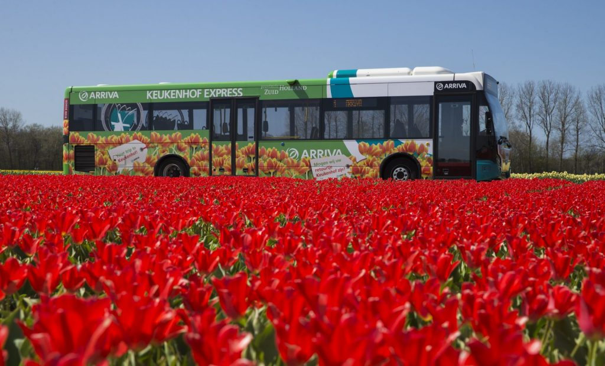
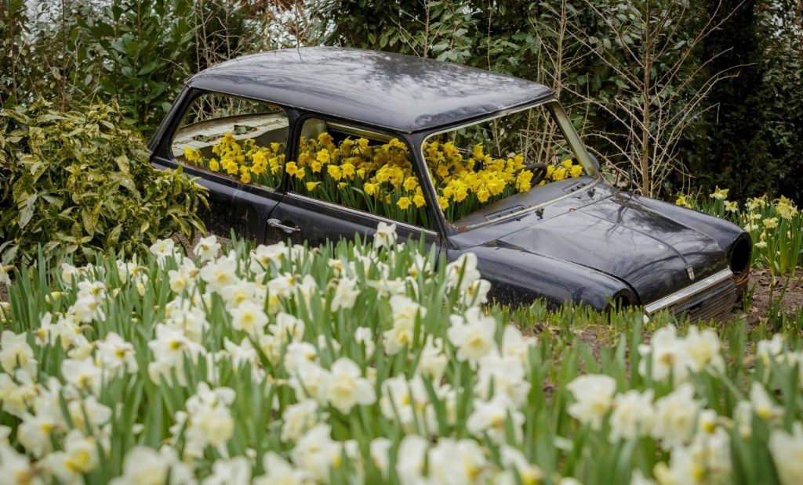
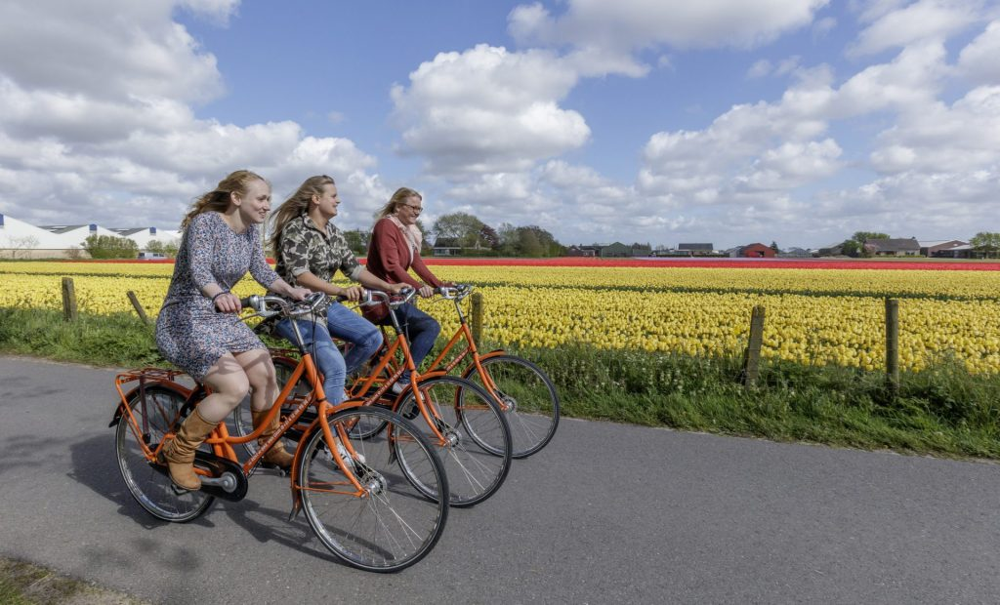
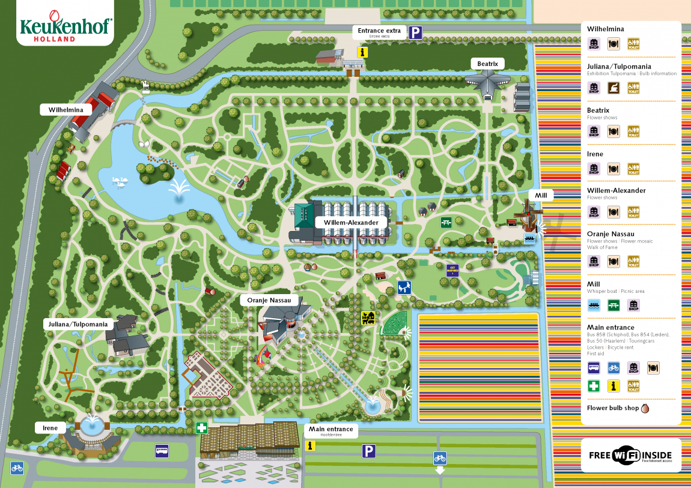

Keukenhof, the park as it is now known, was established in 1949 by a consortium of bulb growers and flower exporters to showcase their products and support the export industry. The garden opened to the public in 1950 and received 2,00,000 visitors in its first year. Keukenhof Park covers an area of 32 hectares (79 acres) and approximately 7 million flower bulbs are planted in the gardens annually. Keukenhof is widely known for its tulips, it also features numerous other flowers, including hyacinths, daffodils, lilies, roses, carnations and irises., Keukenhof is only open to the general public for a world-renowned 8 week tulip display from mid-March to mid-May,with peak viewing arriving near mid-April, depending on growing season weather, which varies annually. In 2019, 1.5 million people visited Keukenhof equivalent to 26,000 visitors per day.
History of Keukenhof
The history of Keukenhof dates back to the 15th century. Countess Jacoba van Beieren [Jacqueline of Bavaria] (1401-1436) gathered fruit and vegetables from the Keukenduin [kitchen dunes] for the kitchen of Teylingen Castle. Keukenhof Castle was built in 1641 and the estate grew to encompass an area of over 200 hectares.
Landscape architects Jan David Zocher and his son Louis Paul Zocher, who also designed Amsterdam's Vondelpark, redesigned the castle gardens in 1857. That park, in the English landscape style, still constitutes the basis of Keukenhof.
In 1949 a group of 20 leading flower bulb growers and exporters came up with the plan to use the estate to exhibit spring-flowering bulbs, signaling the birth of Keukenhof as a spring park. The park opened its gates to the public in 1950 and was an instant success, with 236,000 visitors in the first year alone. 2022 will be the 73th edition of Keukenhof. During the past 72 years Keukenhof developed into a world-famous attraction.
Visitor Breakdown data from year 2008 to 2019
| Year | Visitors | Year | Visitors |
|---|---|---|---|
| 2008 | 8,35,000 | 2014 | 10,20,000 |
| 2009 | 8,50,000 | 2015 | 11,75,000 |
| 2010 | 8,00,000 | 2016 | 11,43,000 |
| 2011 | 8,84,000 | 2017 | 14,00,000 |
| 2012 | 8,75,000 | 2018 | 14,00,000 |
| 2013 | 8,49,000 | 2019 | 15,00,000 |
A Short Video Tour.....
Travel Plan
By Public transport
In most cases you travel the cheapest with a Combiticket. This ticket is both your entrance ticket for Keukenhof and the ticket for your journey by public transport on that day.
By Car
Keukenhof provides parking. Parking costs € 6 and the car park closes at 19:30. Charging stations for electric cars are available in the car park, near the main entrance.
By Bike
There are bicycle racks at both entrances to the park. You can park your bicycle or moped there for free. In the case of an emergency, it is possible to recharge your electric bicycle.
Map
To Download the map click the image below

FAQ
When is the best time to visit Keukenhof?
Flowering at Keukenhof parallels that in nature. The crocuses, daffodils, hyacinths and early tulips flower at the start of the season. Other flowers bloom later in the season such as the (larger) tulips. It is less busy before 10:30 and after 16:00. It is also less busy on Monday, Tuesday and Wednesday than on the other days of the week.
Can I bring my own food and drinks?
Yes, you may bring your own food and drinks. You may not eat or drink your own food or beverages in the restaurants.
Are dogs allowed in the park?
Dogs are allowed into Keukenhof as long as they are on a leash and there is a maximum of 1 dog per person. Dogs are not allowed into the pavilions or restaurants with the exception of guide or support dogs. Dog excrement bags are available free of charge at the ticket entrance.
I lost an item at Keukenhof. Did you find it?
We collect all lost items and post them in iLost. Click here to see if your item has been found.
May I stroll through the bulb fields?
No. You may not walk through the bulb fields as this damages the bulbs. The fields are also the private property of the bulb growers. You are permitted to take photographs from the road.
How long can I stay in the park?
In our experience, most visitors spend 3 hours at Keukenhof.